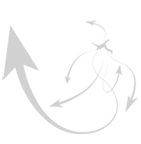

НОВОСТИ
Все
новости
03.12.10 Появился новый образ Хорплоши.
За понравившийся Вам образ Вы можете проголосовать на странице " Поиск образа". Подробнее...

|
Хорплоша и дети.
А теперь я предлагаю Вам быть первыми читателями, почитателями а так же и критиками новой истории о Хорплоше. Из этой истории дети узнают какие поступки детей изменили настроение и поведение Хорплоши, что она решила сделать, для того, чтоб дети поняли, что нельзя совершать плохие поступки и, наконец, чем же все это закончилось.
Хорлоша и дети.
Хорплоша шла вприпрыжку
И песню напевала,
Спор маленьких детишек
Случайно услыхала.
Сережа, Катя, Люба,
Стояли на крылечке,
А легкий летний ветер,
Вил косы и колечки.
Закончились уроки
И вот они собрались,
В одном простом вопросе,
Их мненья разбежались.
Сережа твердил громко,
Жуя пирог огромный,
«Задире Соколову
Устроить надо темную. »
|
|
Но Катя говорила:
«Не надо трогать Сеню,
Сегодня на дежурстве
Он починил мне веник.
Принес ведро воды он,
Нашел мне тряпки, лейку,
Пока я убиралась,
Сидел он на скамейке.
Травил он анекдоты,
И пел «под соловья»
Чтоб мне не скучно было,
Когда трудилась я.
Хорплошу рассмешили
Катюшины слова,
От смеха удержалась
Она едва-едва!
|
|
Стояла Люба тихо,
Платочек теребила,
Замолвить свое слово,
Конечно, не забыла.
-А Соколов сегодня,
Отнял у меня булку,
Когда после обеда
мы вышли на прогулку.
Ногой о землю топнул,
И кулаки сжал грозно,
Скривился в злой гримасе,
Сказал Сергей серьезно.
А у меня сломал он ,
Любимый паровоз,
Который из Германии,
Дед Николай привез.
|
|
Все, решено, сегодня
Ему намылим шею.
Сережа подбоченился и
И зашагал быстрее.
За ним пошли и девочки
К подъезду Соколова.
У каждого решение
Свое было готово.
Хорплоша закричала,
«Ну, что это за дети?
Нельзя, нельзя же драться
Вы бросьте шутки эти!
Я тоже разозлюсь тогда,
Возьму и в вашем доме,
Побью я всю посуду,
И банки на балконе.
|
|
А лучше я попрячу
Игрушки все у вас,
И сладости попрячу
О, точно! Просто класс!
Хорплоша побежала
Сначала в дом к Сереже,
Чтобы плохое сделать,
Как делает он тоже.
Так, где тут шоколадки?
Пирожное, печенье?
Все заберу себе я,
Устрою день рожденья!
Игрушки заберу я,
Вот этот паровоз,
Который из Германии
Дед Николай привез.
|
|
Хорплоша у Сережи
Игрушки собирала,
При этом свою песенку
Тихонько напевала.
-Машины, паровозики
И мягкие игрушки,
В мешок что не полезет,
То спрячу под подушку.
Ха-ха, своих игрушек,
Не встретишь как обычно,
Зато тогда поймешь ты,
Что драться неприлично.
Тем временем ребята
В подъезде притаились,
Но Сени долго не было,
И ждать все утомились.
|
|
Тут Катя не сдержалась
(Бить Сеню не хотела),
Э, нет, ребята, драться,
Совсем плохое дело.
Давайте мы попробуем
Ему все объяснить,
А если не поймет он,
Тогда уж будем бить.
Да не поймет он, Катя,
Потратим время зря,
Уж лучше мы поставим,
Ему два фонаря.
Зашел в подъезд тут Сеня,
Застал друзей врасплох,
Они все рассуждали,
Плох Сеня, иль не плох.
|
|
Давайте бить задиру,
Командовал Сережа.
Но Люба отступилась,
И охватилась дрожью.
Нет, лучше мы по – мирному,
Пусть булочку отнял.
По-взрослому решим все,
Достойнейший финал!
Сережа неотступно,
Сильней сжал кулаки
Пошел быком на Сеню,
И крикнул : -Берегись!
Я не прощу за сломанный
Любимый паровоз,
Который из Германии
Дед Николай привез.
|
|
Тут Катя испугалась,
И встала между ними,
Я не позволю, чтобы
У Сени был глаз синий.
Не будем мы устраивать,
Разборки злые тут,
А Сеня извиниться,
Ребята все поймут.
Тут Сеня улыбнулся,
Не пряча честных глаз,
-Ребята, извините,
Что я обидел вас.
Три очень сдобных булочки,
В портфеле у меня,
Берите, угощайтесь,
Ведь вы мои друзья.
|
|
Ребята, после школы,
Уже проголодались,
От сдобных вкусных булок,
Они не отказались.
Твой паровоз, Сережа,
Сегодня починю, а хочешь,
Я КАМАЗ тебе
Огромный подарю.
Крутой, на батарейках,
Весь светиться в огнях,
Пультом он управляется,
Купили мне на днях.
Не надо мне КАМАЗ,
А паровоз чини,
Потом, если захочешь,
То поиграть возьми.
|
|
Тут Сеня прослезился,
От радости такой,
-Давайте, разговор наш
Закончим мы игрой.
Давайте дружно песню
Веселую споем,
Потом во двор в песочницу,
Мы все играть пойдем…
Хорплоша этим временем,
Игрушки собирала,
Сложила у Сережи,
И к Любе побежала.
-Какие куклы, домики,
И мягкие игрушки,
В мешок, что не полезет,
То спрячу под подушку.
|
|
Ха-ха, своих игрушек,
Не встретишь как обычно,
Зато тогда поймешь ты,
Что драться неприлично.
Затем Хорплоша шустрая,
С огромнейшим мешком,
Шла и дорогой думала:
Идти ли в Катин дом?
Она ведь Сеню даже,
Обидеть не хотела,
Лишать ее игрушек-
Плохое это дело.
Хорплоша тут услышала,
Веселый детский смех,
И песню озорную,
Пел Сеня громче всех.
|
|
Хорплоша стала доброй,
Увидев ребят дружных,
-Ах, много ли для счастья,
Мне в этой жизни нужно?
Лишь были бы все добрыми,
Дружили бы все вместе,
И пели бы веселые
И радостные песни.
|
|
Вот вам мешок огромный,
В нем ваши все игрушки,
А если чего нету,
Найдете под подушкой.
Сережа гордо вытащил,
Любимый паровоз,
-Играй в него ты, Сеня,
Дед для игры привез!
|
|
Активных опросов на данный момент нет.


Поиск
Подписка на новости
|